Appreciation for Demetori is one thing, but the true value lies in the fact that this metal circle relates to a whole new brand of music genre tailored around Touhou music arranges. Meaning that if you happen to stumble upon Demetori's greatness, you will be sure to fancy similar bands with their unique styles but relatable origins.
To encourage such a development in order to steadily increase the audience for this kind of media, this website will also feature relatable music circles with a similar background but with their own different twist on the Touhou arrangements and overal indiependent music design that is prevalent in the land of the rising sun.
Please use the banners below as a way to navigate yourself through the long list of music circles. Spread the word!
| As Killing your Breakdown | Pizuya's Cell | |||
| Blankfield | Register6 | |||
| CROW'SCLAW | 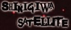 | Shinigiwa Satellite | ||
| Foreground Eclipse | Silently Shooting Traitors | |||
| 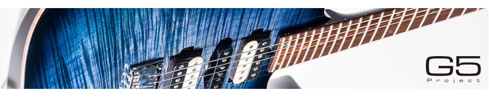 | G5 Project | 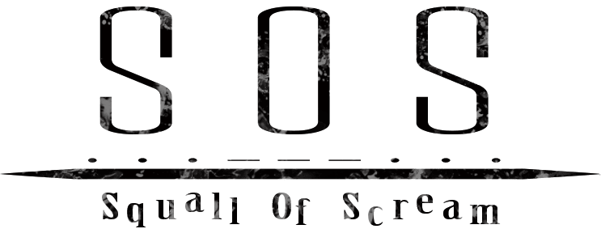 | Squall of Scream | |
| GET IN THE RING | Thousand Leaves | |||
| IRON ATTACK! | UI-70 | |||
| Kishida Kyoudan & The Akeboshi Rockets | Undead Corporation | |||
| 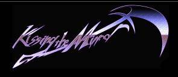 | Kissing the Mirror | Unlucky Morpheus | ||
| Live House S.S.H | 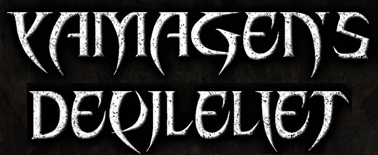 | YAMAGEN'S DEVILELIET |
| 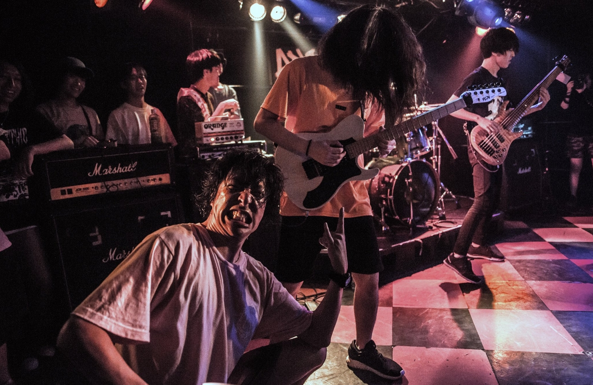 |
Genre: Metalcore, Vocal A rather youthful and young group of men who released a single full-length album titled All their compositions are based on Touhou's musical accomplishments. |
|
Genre: Screamo, Post-Hardcore, Vocal Foreground Eclipse was a Post-Hardcore music band with clean vocals and screams and was one of the more prominent and famous bands in Touhou arrangement scene with quite high production values and rather deep and sometimes gruesome lyrics. Even though the band disbanded as of Comiket 85 due to creative differences, their arranges still hold an important spot for vocal Touhou arranges. Nearly all of their compositions can be found on youtube.
| 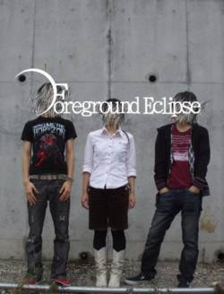 |
| Crossfade of Foreground Eclipse's last released Album titled "Stories That Last Through The Sleepless Nights" that was released at Comiket 85 | |
| 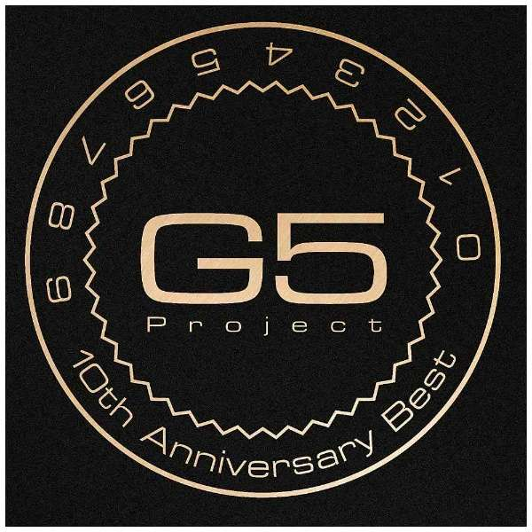 |
Genre: Rock, Instrumental, Guitar-Porn, Various Not quite the Touhou arranger but nevertheless relevant during the era of doujin created metal music. Infact, they celebrated their 10th anniversary in 2016. This music group consists of several guitar freaks, each eager to show off their skills and everyone thrilled to bring metal to the next level. G5 Project wins in terms of atmospheric guitar compositions and doesn't hesitate in using keyboard and orchestra to further enhance their vision of ideal rock music. Their head, Masahiro "Godspeed" Aoki, is more engaged in mastering music nowadays but who knows, he may casually return with G5 Project to bend us to his will with another album. |
|
Genre: Rock, Pop, Female Vocal With prominent female clean vocals, GET IN THE RING is quite softer than most featured bands on this list. Their Touhou arranges border on being classified as pop music. But even with a handful of metal titles, GET IN THE RING manages to snatch a spot for themselves for being quite active on composing Touhou arranges. Please check out their soundcloud channel for more music. |
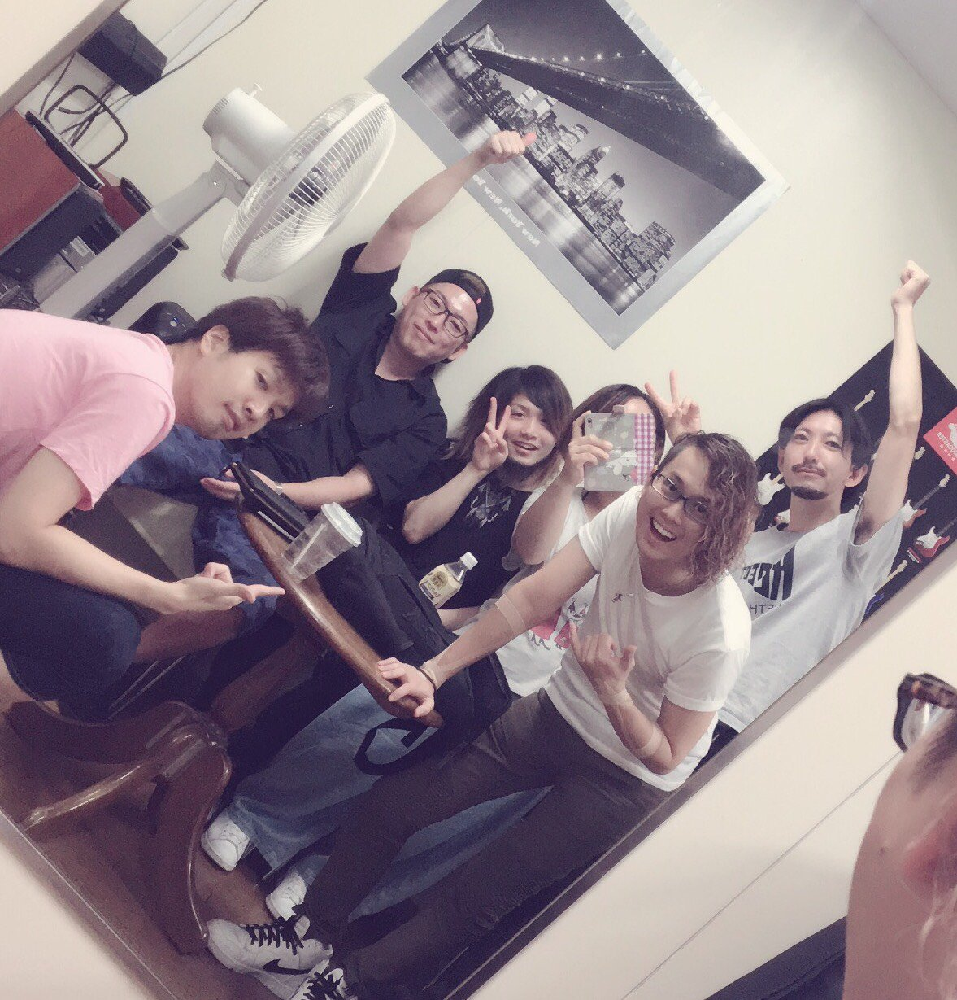 |
| 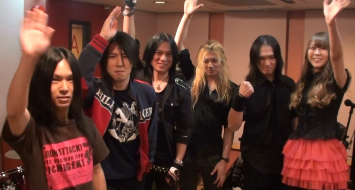 |
Genre: Metal, Power-Metal, Vocal There is not one band closer to having a scene defining presence than IRON ATTACK! with their characteristic Power-Metal vocals and a rather rustic guitar play. Even if many consider the band a comedic approach on Touhou arranges, their originality stands out with them going super hyper on every event and gig they're playing at. An absolute blast is witnessing them live, those interested may check out their Website and Facebook page in order to learn more about their intriguing and yet charismatic nature. |
|
Genre: Rock, Punk, Female Vocal Many will remember Kishida Kyoudan & The Akeboshi Rockets for being a band mostly involved in creating Openings for Japanese Animation like Highschool of the Dead or more recently, GATE. But before signing a contract with Warner Bros. Home Entertainment, even they firstly emerged as a cover band for several series, including Touhou. With its punkish take on arranging Touhou music tracks and the strong and distinguishing voice of main vocal Ichigo, Kishida Kyoudan has made it clear that a Touhou arrange scene without this particular band seems incomplete. Though active on arranging Touhou music, creating original tracks and composing Anime Openings, somehow this band manages to deal with this tight schedule while pumping out quality tracks and even going so far as playing life on several tours! |
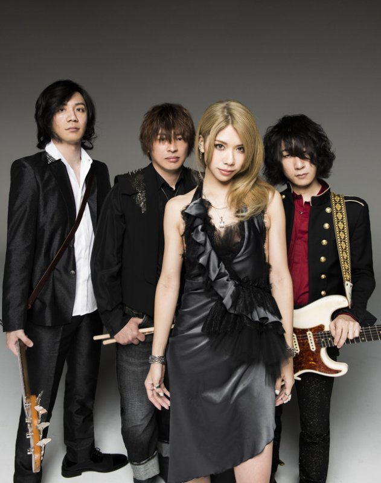 |
| 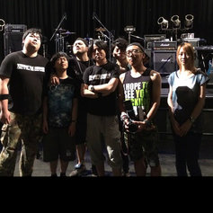 |
Genre: Melodic Death, Vocal Filthy vocals, faithful implemented guitar melodies based on Touhou music and a lot of unrestricted oomph are trademarks of the melodic death band Kissing the Mirror. They had a final live tour in 2016 yet they remain firmly in the memories of all those who cherished them dearly. A band of their kind was quite rare in the Touhou scene and though the musical direction didn't fit with everyone, there hadn't been a worthy successor so far. Nearly all of their released albums should be found online. |
| Crossfade of Kissing the Mirror's Album titled "SCREAMING DEAD HEAT" that was released at Comiket 81 | |
|
Genre: Electronic Metal, Instrumental This particular music circle isn't very dominant in the Touhou arranging scene as it doesn't really have a huge presence on the internet. The circle's full name is Live House of Saitama Saishuu Heiki or in short: S.S.H. which was initially founded by two brothers who were living in the Saitama Prefecture in Japan though only the younger brother is actually responsible for composing the music. Their earliest work dates back to 2002 and they are even active today, creating many arranges and original tracks. They often cooperate with another independent music artist named Aether. As luck would have it, there aren't photos, videos of them playing life or anything publicially released other than their albums. A huge enigma for a music circle that is supposed to be 16 years old. |
|
| Crossfade of Live House S.S.H.'s recent Album titled "Brutal Blast" that was released at Comiket 92 | |
|
Genre: Gothic Metal, Classical, Electronic, EDM, Piano, Female Vocal It's truly hard to categorize Pizuya's Cell into a specific genre because their released albums so far differ greatly in the scale of genre that this music circle is capable of producing. So far they have released pure gothic metal albums, some poprock albums, a few electronic albums and even some piano arrangement albums. The circle explicitly relies on popular vocal artists who will sing their own composed lyrics with the instrumentals delivered by the circle. Because of the fact that Pizuya's Cell uses guest vocals, they are unable to play live gigs and therefore do not have any photographs or any kind of public appearance in general, leaving them with frontcovers of their current album to use as profile-pictures on social media plattforms. So the best to do here is to listen to the crossfade below that incorporates as good as everything that the music circle is capable of. |
|
Genre: Rock, Screamo, Vocal Register6 brings out the raw enjoyment of listening to smuddy guitars and incomprehensible screams that accompany its Touhou arrangements. The music band was formed in 2009 and they are still kicking strong after all those years even though their own website doesn't depict that. In short: They aren't known to keep things up to date, much to the shame of their audience. Needless to say, Register6's spray of unique rock flavours make it hard to really grasp the genre that the band is going with. Sometimes they invite guest vocals, sometimes they help themselves with oriental instruments. |
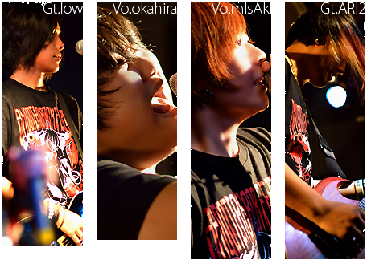 |
|
Genre: Punk, Post-Hardcore, Female Vocal Shinigiwa Satellite started strong as a Punk/Post-Hardcore music circle with male vocals back in 2009 but switched to a female singer from 2011 onwards until today. Their presence shows through the count of 4 albums and EPs they have released in 2017 alone, bringing the music circle the rightly earned attention and popularity of their peers. The music circle is not known to perform in public and is purely releasing studio albums so that explains the lack of any sort of public footage. Because of their loyalty to the Touhou arrangement brand, they have only released Touhou arrangements since the dawn of their creation. |
|
Genre: Metalcore, Post Hardcore, Electronic In the case of the Metalcore/Post-Hardcore band Silently Shooting Traitors, they were established in 2013 while arranging Touhou music but later left the scene to make their name with original songs that they have composed themselves. To date, only a a single Touhou arrangement album titled STAIN & RAIN was released before they set their eyes on being independent with their musical scores. Compared to similar bands that embrace the same music genres, Silently Shooting Traitors actually managed to grab the attention of a decent amount of international listeners, partly because of their proficiency in using english vocals that is rare in the Touhou arrangement scene. |
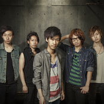 |
|
Genre: Melodic Death, Screamo, Post-Hardcore, Vocal Squall of Scream is a fairly unknown music band playing underground gigs and mostly record pieces of arrangements for themselves rather than record their tracks in studio quality. They were accidentally exposed to the public after uploading a Melodic Hardcore version of the famous Pen Pineapple Apple Pen song that went viral on the internet and they gained new followers. Following the momentum, the band turned to make themselves a name while continuing arranging Touhou and Vocaloid music. |
|
Genre: Metal, Melodic-Death, Vocal Thousand Leaves is a traditional Metal band that brings out crisp guitars to the mix since 2009. Even with the departure of their drummer, Kawase, the remaining duo managed to mostly fill that void by accommodate electric drums and released several albums. They took a inspirational break since 2013 and are yet to return. |
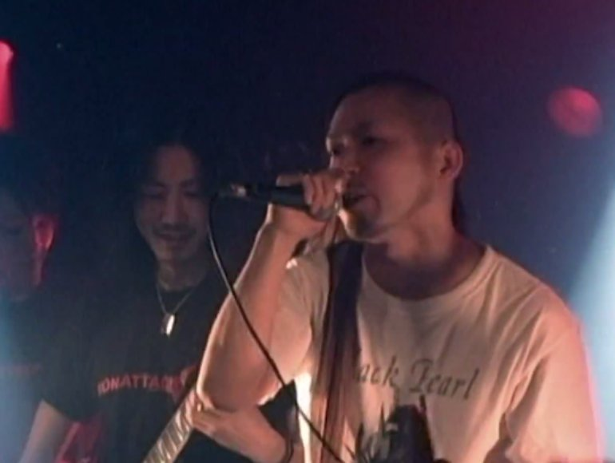 |
|
Genre: Instrumental, Metal, Hard Rock, Electronic UI-70 belongs to the oldest Touhou arrangement groups, consisting of two active members and two already departed ones. They are directly responsible for pulling Demetori into the fray of Touhou arrangers and even when they separated, are in good terms with each other. Their arrangements are more refined to what they used to sound like back in the day and as a purely instrumental music circle, they do their utmost to uphold the quality that they have attained over the years. Their openmindendness leads them to release their albums not only on japanese digital music stores but also on bandcamp and several other international music outlets. |
|
Genre: Metal, Melodic Death, Vocal Undead Corporation has experienced a rather sudden and recent revival by releasing a album in the most recent Comiket Convention, their last released album being in 2014. The band's first appearance was in 2010 and the band's duo did their best to stay relevant by constantly pushing out albums twice a years and collaborating with other more popular music circles. After the slough in 2014, fans were saddened by their lack of presence but with their new album, it seemed their disappearance was but an illusion. |
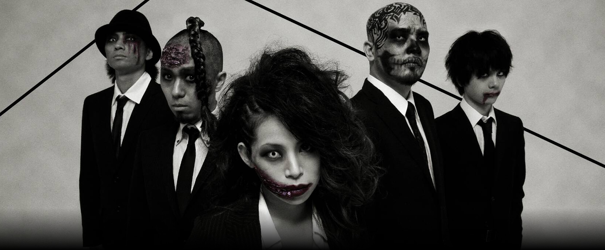 |
| 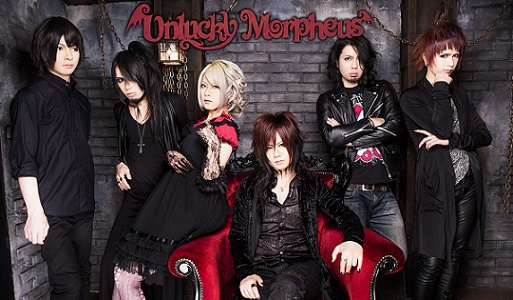 |
Genre: Melodic Metal, Symphonic Metal, Speed Metal, Power Metal, Vocal There are only a handful of music bands that truly excel in playing live concerts. Unlucky Morpheus seriously belongs to those cherished bands that makes the act of sweating in the masses a comfortable group activity. Strong vocals, the use of instruments belonging to the local orchestra and lyrics bursting full of energy, Unlucky Morpheus makes their entrance as a highlight to remember. Ever since the incurrence of their being back in the year 2008, the band strives to make entertainment something to embrace fullheartedly and they continue to do so by going live while cosplaying and also re-recording their older albums in a lifely manner. |
|
Genre: Metal, Speed Metal, Instrumental YAMAGEN'S DEVILELIET's worth to the arrangement scene is immense, not due to its individual involvement in the creation of arranged music but because the group is capable of mastering music to the level that other doujin circles can't compare to. YAMAGEN was involved with several known music circles such as Pizuya's Cell, CROWS'CLAW, Kissing the Mirror and many more. But other than that, the music group also releases original guitar tracks with astounding guitar riffs. As the last circle to be mentioned on this list, it is only fair to surrender this spot to YAMAGEN'S DEVILELIET for its towering achievements towards fanmade music productions. |